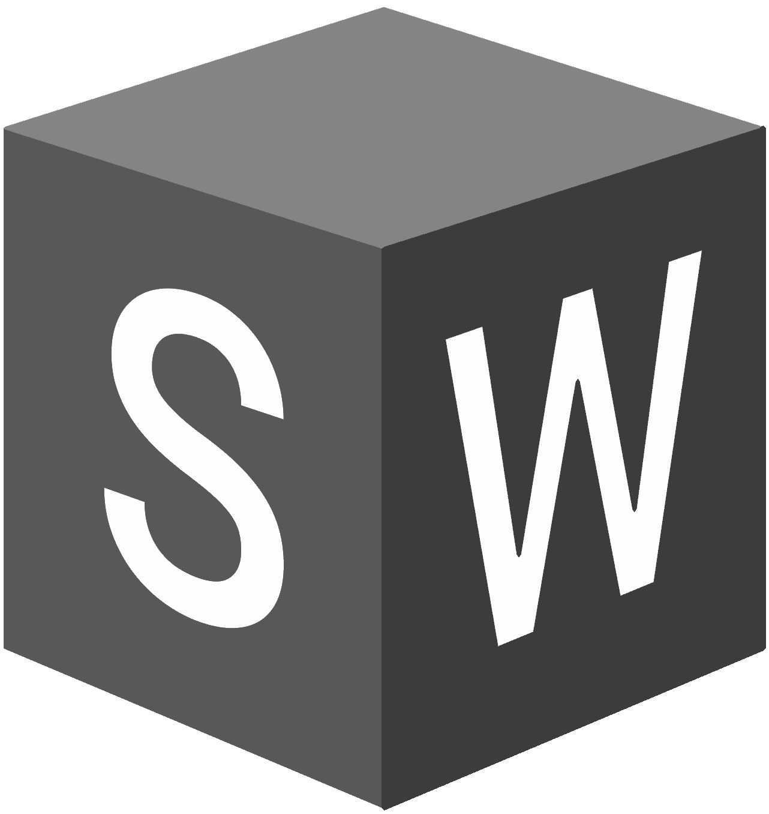
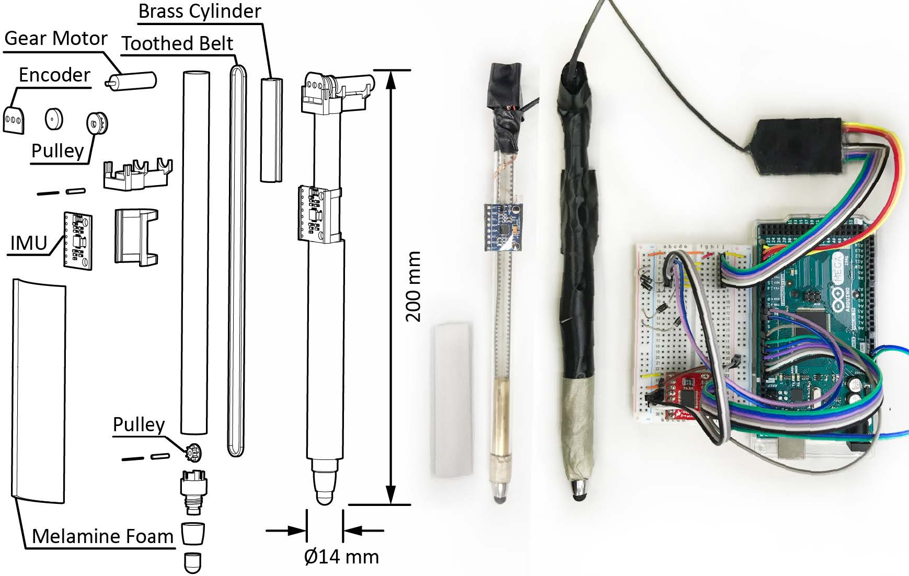
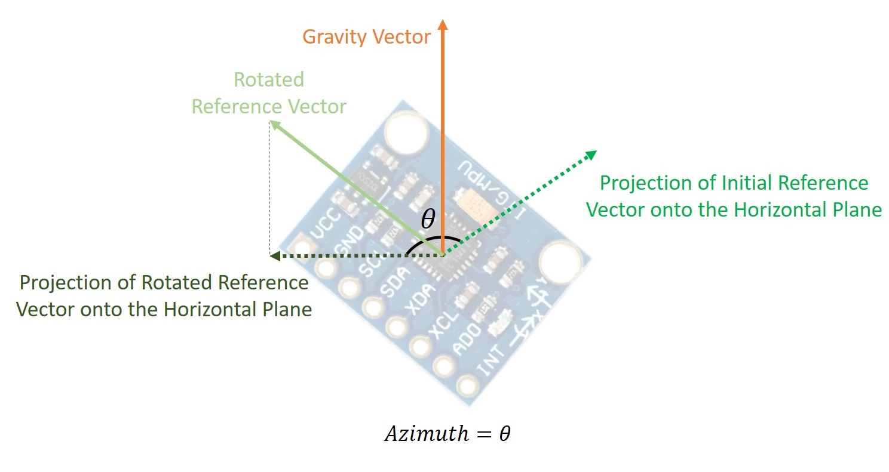
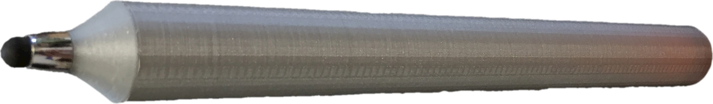
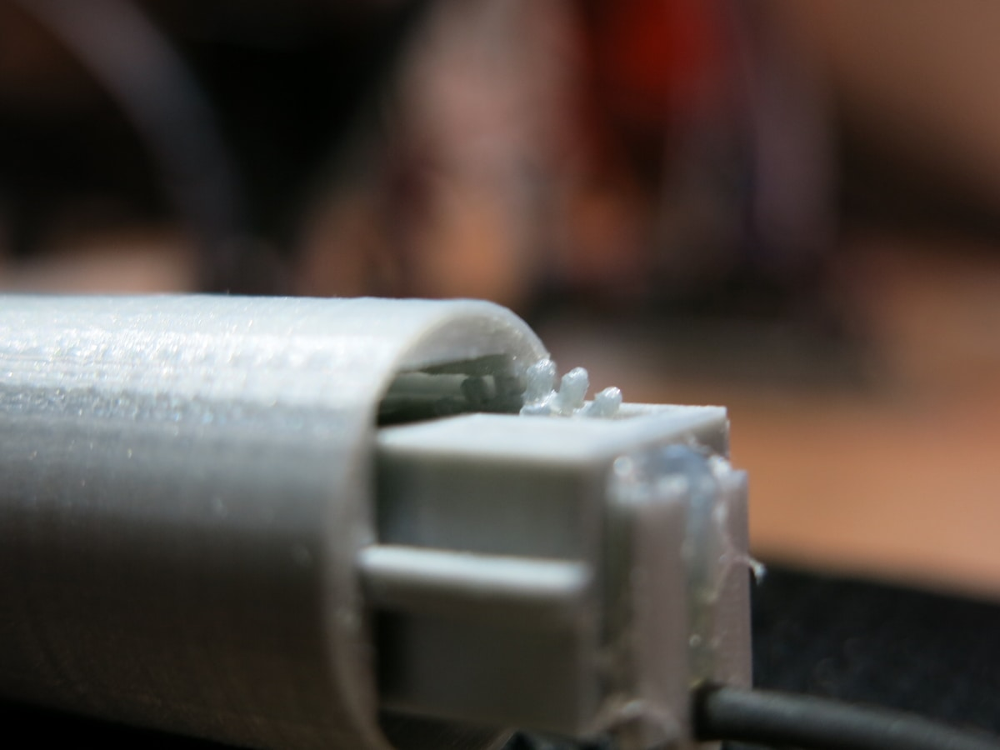
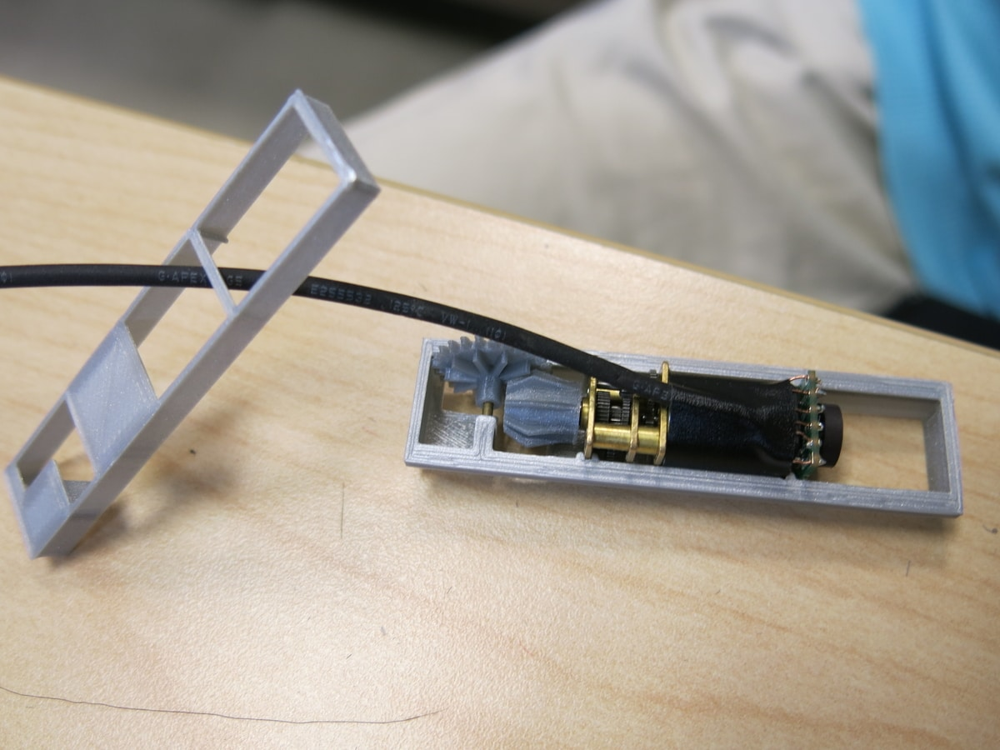

My Roles
HCI Researcher
Prototyper
Developer
Team
Size: 7
As the primary researcher of the project, I collaborated with other students in user research sessions and application development under the supervision of my advisor. I contributed to the majority of this work.
Tools and Languages
Arduino
Unity
3D Printer

Solidworks
C++
C#
My Contributions and Artefacts
Prototype v2
Designed and 3D printed custom components to support the stylus's thin form factor, developed a PID controller for accurate actuation, and developed a pen orientation sensing module.
Developed techniques for handling interrupt signals in Arduino sketches and mastered 3D printing extremely fine parts.


Orientation-sensing Module
Discovered that inaccurate sensor readings at certain orientations were caused by Gimbal lock, studied mathematical solutions, and created robust algorithms for calculating the stylus's azimuth and altitude angles.
Learned to mathematically translate quaternions generated by the inertial measurement unit into pen orientation, solving the Gimbal lock issue concomitant with the usage of yaw-pitch-roll representation.

MPU6050 (Inertial Measurement Unit) Tutorial
Resolved a freezing issue with the code developed by the Arduino community for MPU6050 and cleaned and shared the code on Github.
Learned to investigate code developed by others and identify the sources of issues.
Prototype v1
Designed and created a prototype stylus that shifts balance by having the motor move along the barrel.
Learned to construct robust linear actuators and 3D-print custom mechanical parts.



Ball Balancing Game
Established serial communication between Arduino and Unity and created an interactive game using Unity.
Learned to resolve system errors caused by delays in serial communication by turning blocking code into non-blocking code.